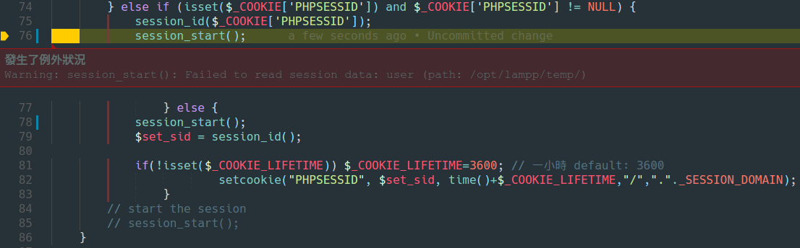

Warning: session_start(): Failed to read session data: user
其實這錯誤訊息碰到一陣子了，從我還不會用debugger就碰到了，
在這裡要再次讚訟debugger的好，之前的情況是我登入頁打完帳號密碼點登入完全沒反應，
只會繼續跳轉回登入頁，
因為之前在PHP5的時候都很正常，是升級到PHP7的時候發生問題的，直覺就告訴我是PHP在session上有什麼更動
土炮echo "<pre>"; var_dump($result); echo "</pre>";一個一個找真的太慢又太沒效率了 沒辦法登入
一開始看到這行錯誤，首先先去看存session路徑的檔案權限結果沒問題
這個錯誤很單純就是Read的時候沒有回傳一個空字串，
改之前
<?php
/**
* read
*/
function _read($session_id) {
$sql = "SELECT sessdata FROM sessions
WHERE sesskey = '" . $session_id . "'
AND expiry > '" . date("Y-m-d H:i:s", time() ) . "' LIMIT 1";
$iRs = mysqli_query($this->_link, $sql);
$fields = mysqli_fetch_assoc($iRs);
return $fields['sessdata'];
}
?>
改好後
<?php
/**
* read
*/
function _read($session_id) {
$sql = "SELECT sessdata FROM sessions
WHERE sesskey = '" . $session_id . "'
AND expiry > '" . date("Y-m-d H:i:s", time() ) . "' LIMIT 1";
$iRs = mysqli_query($this->_link, $sql);
return empty($fields = mysqli_fetch_assoc($iRs)) ? null : $fields['sessdata'];
}
?>
session-set-save-handler.php#118225
php5.6からphp7.1にあげたら Failed to read session data: user (path: /var/lib/php/session) と怒られた